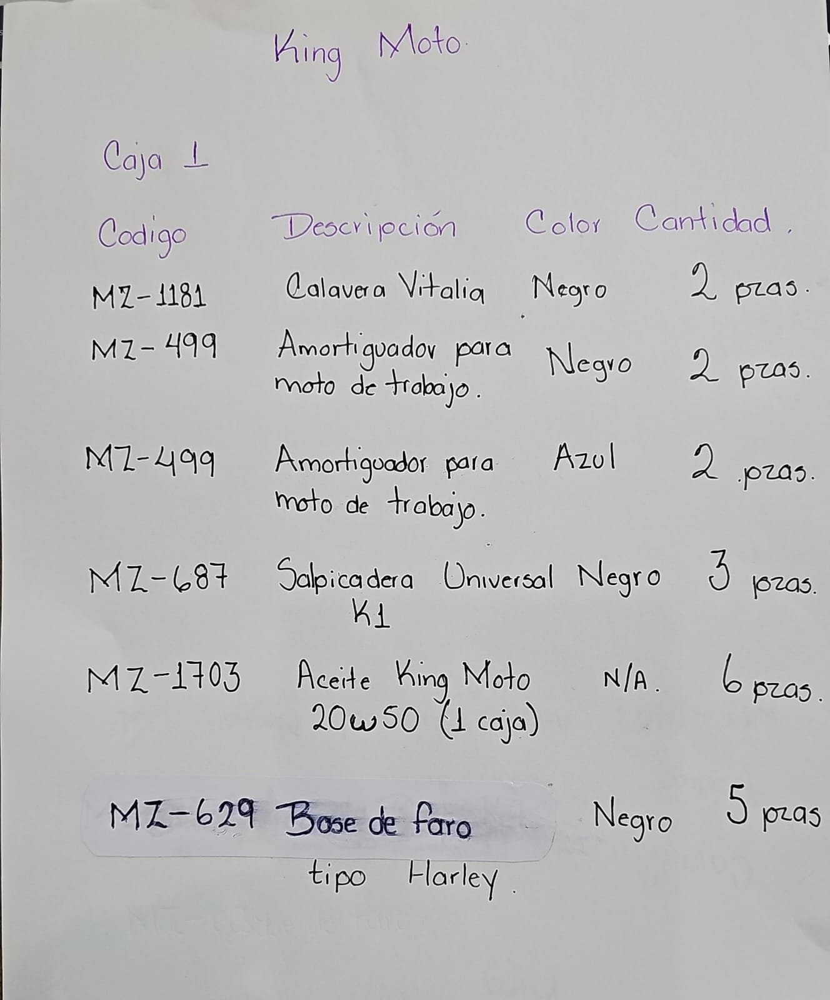

22 unidades aceptadas: 17 asignadas (77.27%) y 5 en bodega (22.73%). Publicación autorizada por Ángel.
| Código | Recibido | Asignado | Envío | Bodega |
|---|---|---|---|---|
| MZ-1181 | 2 | 2 | 293 | 0 |
| MZ-499-NG | 2 | 2 | 293 | 0 |
| MZ-499-AZ | 2 | 2 | 293 | 0 |
| MZ-687 | 3 | 3 | 293 | 0 |
| MZ-1703 | 6 | 6 | 293 | 0 |
| MZ-629 | 5 | 0 | 5 | |
| MZ-1447 | 2 | 2 | 292 | 0 |
Amortiguadores: 2 juegos completos negros y 2 juegos completos azules. Bases de faro tipo Harley MZ-629 aceptados, sin envío hasta identificar publicación.
292: 503 + 2 = 505. 293: 29 + 15 = 44.
Lista de Jessica, 2 cajas. Falta CFDI; pedido 55/56 por conciliar. Mercado Libre y Motofix sin modificar.


Corrección de Jessica, 30 oct 08:43: MZ-629 sustituye la identificación anterior MZ-731. Registro L26103008541847 confirmado. No se añadieron unidades ni se modificó ningún envío.

30119: 2 asientos, $450 · 30120: 21 unidades, $3,499
23 cotizadas / 22 recibidas. MZ-687: 4 cotizadas y 3 recibidas, diferencia 1 ($180 con IVA). MZ-499: 4 negros cotizados, recibidos 2 juegos negros y 2 azules ya autorizados. Precio $503 con IVA frente a referencia de pedido $680, por aclarar. MZ-629 x5 consta en pedido 56. Conservamos 17 asignadas y 5 en bodega. Falta CFDI; estos documentos no agregan stock.